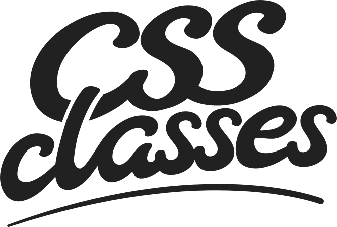

Presented by CSSconf EU and OpenTechSchool
Was sind unsere Ziele?
- Zeigen dass CSS Spaß macht
- und niemand Angst vor dem Coden haben muss.
Lernmaterialien
keine Lehrmaterialien
- praxisorientiert und pragmatisch
- dafür ausgelegt im eigenen Tempo bearbeitet zu werden
Coaching isn't teaching…
Wir machen keinen Frontalunterricht!
Coaches…
- sind da wenn sie gebraucht werden
- konzentrieren sich auf die Lernenden
- berücksichtigen deren Kenntnisstand
- und ermutigen sie weiterzumachen.
Erzeuge eine freundliche Atmosphäre
- indem Du höflich und freundlich bist
- Augenkontakt herstellst
- indem Du zugibst wenn Du etwas nicht weißt
- den Lernenden sagst dass es ok ist Fehler zu machen
- und dass sie eine Pause machen sollen wenn es frustrierend wird.
- Setze kein Wissen voraus, aber gehe davon aus dass sie unendlich intelligent sind
- Benutze normale Sprache ohne Slang
- Stelle sicher dass sie das was Du gesagt hast auch verstanden haben
- und erklärt es nochmal, aber anders, falls das nicht der Fall ist.
Lernende ermutigen
- Ermutige sie selbständig herumzuspielen
- Was auch immer sie machen: es ist großartig und schön!
Fragen
- Schaue Dich um ob jemand Probleme hat
- Manchmal trauen sie sich nur nicht zu fragen
- Frage ab und zu: “Wie läuft es? Kann ich Dir mit irgendwas helfen?”
- Das ist ein mächtiges Werkzeug: Es hilft Lernenden die schüchtern sind und erzeugt Dialog.
- Ein anderer Trick: Setze Dich neben sie und unterhalte Dich mit ihnen über das was sie gerade machen.
Fragen sind gut!
- Sorge dafür dass die Leute sich daran gewöhnen Fragen zu stellen
- Betone dass es so etwas wie “dumme” Fragen nicht gibt
- Gib anderen Lernenden die Chance die Frage zu beantworten
- Coding bedeutet Kollaboration – sorge dafür dass Lernende das verstehen!
Fragen beantworten
Wie antwortest Du?
- Positiv:
- “Gut dass Du fragst!”
- “Gute Frage!”
- “Hm, da bin ich mir nicht sicher. Lass uns in der Dokumentation nachschauen.”
- Im Zweifel liegt das Problem immer in den Lernmaterialien, nie bei den Lernenden!
Geschwindigkeit
- Es geht nicht um Dich, es geht um die Lernenden. Wir gehen ihr Tempo.
- Jede Person lernt in ihrer eigenen Geschwindigkeit. Und das ist gut so!
- Wir reden langsam.
- Warte mit Fragen oder Kommentare sehr viel länger als als es sich eigentlich gut anfühlt (zähle im Kopf bis zehn).
Sei ermutigend
- Akzeptiere es nicht wenn jemand sagt sie wären zu irgendwas um das zu schaffen. Antworte ihnen dass sie es schaffen können.
- Gratuliere Leuten zu ihren Ergebnissen, und gib ihnen Zeit sie Dir zu zeigen.
Sei ermutigend
- Wenn Leute vom vorgesehenen Pfad abweichen, aber Spaß dabei haben, ermutige sie weiterzugehen.
- Ermutige Lernende anderen ihre Ergebnisse zu zeigen. Sei hartnäckig damit, falls nötig.
Schedule
| 09:30-10:00 |
Installation Party (optional) |
| 10:00-10:15 |
Welcome |
| 10:15-12:00 |
Coding in groups |
| 12:00-13:00 |
Lunch |
| 13:00-17:00 |
Coding in groups |
| 17:00-17:45 |
Demos |
| 17:45-18:00 |
Wrap up |
Need help?
Please Tweet/DM us at @CSSclasses or
talk to us directly.